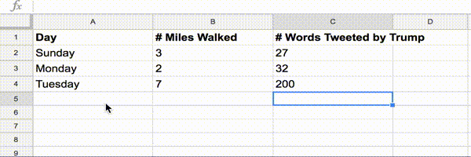

ejercicio: imagina un conjunto de datos o interfaz
#objetivos: lograrás un mejor entendimiento de lo que es posible hacer con "tan solo" una hoja de cálculos. en este taller, aprenderemos sobre hojas de cálculo y una forma similar de ordenar información, llamada JSON. a continuación, revisaremos algunos proyectos que usan hojas de cálculo y JSON. construirás tu propio conjunto de datos - o idearás la recolección de datos para un conjunto de datos especulativo - y esbozarás una interfaz con la que pueda interactuar.
duración: 1.5 horas
prerrequisitos: ninguno
materiales necesarios: conexión a internet, programa para usar hojas de datos como google spreadsheets
la lista indexada
una lista indexada es una forma de organizar información donde una fila de la lista comparte la misma estructura de "índice" seguida de "item", así:
4 —
orden ejecutivo
7 —
distritos
2 —
Stephen
en el ejemplo anterior el "índice" es un número, pero no siempre tiene que serlo.
esta forma de organizar información es muy antigua. aquí hay un extracto de una lista indexada de 1693:
podemos leer horizontalmente una lista indexada. no obstante, la lista indexada también sugiere otra forma de leerla: verticalmente, por columna.
la hoja de cálculo es un tipo complejo de lista indexada, donde las columnas están nombradas de forma explícitas, donde las columnas están explícitamente nombradas y usadas para conectar más de una pieza de información a un mismo índice. esta forma de organizar información también es muy antigua. aquí tenemos una hoja de cálculo de 1662 que fue escrita CON. UNA. PLUMA.
en las hojas de cálculos digitales, cada celda posee su propia dirección. el sistema de direccionado nos permite hacer cosas como rápidamente aplicar una ecuación matemática a una fila o columna completa. podemos fácilmente usar las relaciones entre celdas para realizar cálculos que resultan en información nueva.
ejercicio: construye un conjunto simple de datos
piensa en alguna información en el formato "índice" seguido de "ítem". aquí hay un ejemplo:
Domingo —
3 millas
Lunes —
2 millas
Martes —
7 millas
o
Día
# Millas caminadas
Domingo
3
Lunes
2
Martes
7
añade otro ítem, o característica, relacionado con tu índice.
Día
# Millas caminadas
# Palabras tweeteadas por Trump
Domingo
3
27
Lunes
2
32
Martes
7
200
piensa en algún cálculo que puedas realizar sobre tu conjunto de datos existentes para crear más información. ¿puedes añadir un índice de nombre "total" donde sumas algunos de tus items? ¿puedes dividir algunos de los valores en las columnas entre sí para realizar un cálculo ítem por ítem?

prueba filtrando tu información por columna. o también ordenándola alfabéticamente.
¡felicitaciones! construiste un conjunto de datos.
pero también accidentalmente aprendiste un aspecto fundamental sobre cómo los computadores representan, acceden a y manipulan la información; aprendiste sobre estructuras de datos.
en el contexto de la programación, a lo que le hemos estado llamando índices y items, recibe el nombre de "pares clave-valor" o "pares nombre/valor". es lo que hace tan poderosa a una hoja de cálculos - la forma en que puedes usar un índice para aplicar un cálculo a muchas celdas - es similar a la estructura de datos clave-valor que hace tan poderosos a los lenguajes de programación. a continuación, hablaremos sobre cómo los pares nombre/valor son representados en un formato de datos popular llamado JSON.
formatos de almacenamiento de datos
muchos lenguajes de programación permiten a los programadores almacenar datos en estructuras de datos similares a la que construimos en la hoja de cálculos.
un programa simple en Python puede almacenar un conjunto de pares clave-valor en una estructura de datos, a la que el programador puede acceder y realizar cálculos.
un programa simple en Javascript puede almacenar un conjunto de pares clave-valor en una estructura de datos, a la que el programador puede acceder y construir una interacción.
puedes imaginar a dónde vamos.
JSON es una forma de almacenamiento de datos fuera de un programa de computador, que posteriormente puede ser ingresada a un programa. es análogo a un archivo valores separados por coma (CSV) ya que ambos son formas de almacenamiento de datos, pero son diferentes porque JSON es una estructura de pares nombre/valor, mientras que los datos CSV no están estructurados - son solo datos separados por comas.
este es un conjunto de datos de ataques drone encubiertos por el gobierno de estados unidos, extraídos del proyecto dronestream de josh begley, del que hablaremos pronto.
si revisas, puedes observar pares clave-valor similares a los que hicimos anteriormente y según la especificación JSON: cada nombre está seguido de dos puntos, los pares clave-valor están separados por una coma, y cada conjunto de pares clave-valor está contenido entre llaves { }.
si tienes un archivo JSON y lo quieres convertir a CSV para transformarlo en una hoja de cálculos: https://konklone.io/json/
proyectos basados en hojas de cálculo
ahora que tienes una noción de cómo los datos pueden ser estructurados y usados por programas, revisemos algunos proyectos que se basan en el uso de hojas de cálculo y datos JSON:
ejercicio: idea un conjunto de datos y/o bosqueja una interfaz
ahora sabes cómo funcionan estos proyectos. ¿cómo harías el tuyo? ¿qué harías con él? como mimi onuoha ha estadoexplicando por años, muchos conjuntos de datos todavía no han sido creados.
muchos conjuntos de datos sí existen, pero no poseen una interfaz sobre ellos que los haga accesibles a grandes audiencias. muchos conjuntos de datos que existen quizás no deberían existir. para cerrar, por unos minutos discute uno de los siguientes temas con la persona a tu lado:
idea una interfaz para datos que ya poseas.
idea un conjunto de datos imposible de recolectar.
idea la peor forma de construir un conjunto de datos.
o la mejor forma de construir un conjunto de datos.